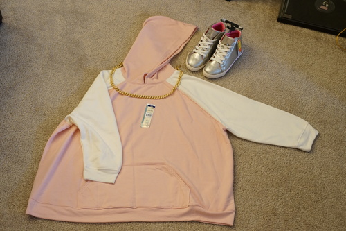
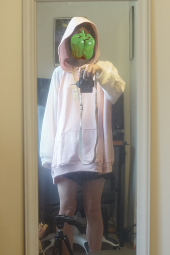

more progress on my walmart brand cosplay! i finished the hoodie today and got some high top sneakers for it a week ago. I combined 3 gigantic terra and sky sweat shirts to make this. iirc they were $5 and the wonder nation shoes were also $5. all on clearance.
i was looking for a mens XL hoodie in pink but i never found one. the problem with womens plus sizes is that they go wider but not longer. I would have loved to have a few more inches on this bad boy but it just wasnt possible without finding a pink mens hoodie. I'll have to wear white shorts under but I'd rather them not show!
i left the upc sticker on in case i changed my mind and wanted to return it (jk jk!!!) but ryan made me take it off to send a picture to makoto!!
next i should make the crown and medallion. I'm not sure if i should use foam or ask my friend to 3d print them for me. I haven't used lightwave in years but i should be able to come up with a model. i'm not really sure if a 3d printed crown would be too heavy. i also need to make the splatfest branding on the shoes and the little charm on them.